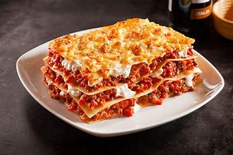

Recette de Lasagna

Description
Vous avez envie de déguster un plat délicieux sans trop vous souciez de points ou de calories, ces lasagnes allégées au fromage blanc est ce qu’il vous faut. Faites sans béchamel, ces lasagnes vous prendront moins de temps de préparation et le résultat est surprenant. A tester vite !
Ingrédients
- 200 g de viande de bœuf hachée
- 6 feuilles de lasagnes
- 1 oignon
- 1 gousse d’ail
- 600 g de pulpe de tomate en conserve
- 100 g de fromage blanc 0%
- 40 g de gruyère râpé
- 1 cuillère à soupe huile d’olive
- 1 cuillère à soupe d’herbes de Provence
- Sel et poivre
Les Etapes de préparation
- Commencez par peler l’oignon et la gousse d’ail, puis émincez-les, et faites-les revenir dans une casserole avec de l’huile d’olive.
- Ajoutez la pulpe de tomate, et les herbes de Provence. Salez, poivrez, puis laissez mijoter à feu doux pendant 20 minutes.
- Faites revenir le boeuf dans une poêle avec un peu d’huile d’olive, pendant 5 minutes à feu moyen. Salez, poivrez, puis mélangez à la sauce tomate et laissez cuire encore 5 minutes.
- Mettez une couche de feuilles de lasagnes dans le fond d’un plat à gratin, puis nappez de fromage blanc.
- Ajoutez par dessus une couche de la sauce tomate et viande haché, puis parsemez de gruyère râpé. Répétez l’opération jusqu’à finir tous les ingrédients, en terminant par une feuille de lasagnes. Couvrez de gruyère râpé.
- Mettez enfin vos lasagnes allégées au fromage blanc à cuire au four préchauffé à 180° pendant 45 minutes avant de servir.